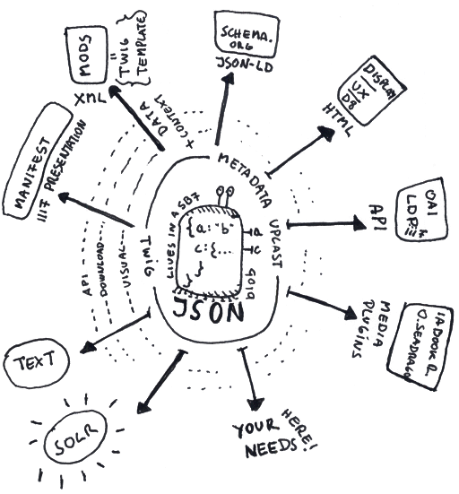

Strawberryfields Forever
What Strawberry fields does, why we built it, and what issues it addresses
Archipelago integrates transparently into the Drupal 8 ecosystem using its Core Content Entity System (Nodes), Discovery (Search API) and in general all its Core Components plus a few well maintained external ones.
By design (and because we think its imperative), Archipelago takes full charge of the metadata layer and associated media assets by implementing a highly configurable, smart Drupal field written in JSON named Strawberryfield that attaches to any content.
All of JSON's internals, keys, paths, and values are dynamically exposed to the rest of the ecosystem. Strawberryfield even remembers its structure as data evolves by storing JSON paths of every little detail.
Nothing Is Real
Archipelago includes additional companion modules, Webform_strawberryfield and Format_strawberryfield that extend the core metadata capabilities of the main Strawberryfield module and allow the same flexibility to be exposed during ingest and viewing of digital objects.
The in-development Strawberry Runners and AMI modules further extend Archipelago's capabilities. Additional information related to these modules will be made available following initial public releases.
Ingesting
Webform Strawberryfield (we had a better name) extends and integrates into the amazing Drupal Webform module to allow Archipelago users to build any possible metadata and media, ingest and edit, workflows directly via the UI using webforms.
By not having a hardcoded ingest method, Archipelago can be used outside the GLAM community too, as a pure data repository in biological sciences, digital humanities, archives, or even as a mixed, multidisciplinary/cross-domain system.
We also added WIKIDATA, LoC, Getty, and VIAF authority querying elements to aid in linking to external Linked Open Data sources.
All these integrations are made to help local needs and community identities to survive the never-ending race for the next metadata schema. They are made to prototype, plan, and grow independently of how metadata will need to be exposed yesterday or tomorrow. And we plan to add more.
Explore what other features webform_strawberryfield provides to help with ingesting, reading, and interacting with your metadata during that process.
Exposing

Format Strawberryfield (we had even a better name but...) deals with taking your JSON based metadata and casting, mashing, mixing, exposing, displaying, and transforming it to allow rich interaction for users and other systems with your digital objects.
In its guts (or heart?), Archipelago does something quite simple but core to our concept of repository: it transforms in realtime the close to your needs open schema metadata that lives in strawberryfield as JSON into close to other one's fixed schema needs metadata; any destination format, using a fast, cached templating system. A templating system that is core to Drupal, called Twig:
- Twig in Symfony
- Twig in Drupal
This templating system is exposed to Archipelago users through the UI and stored side by side in the repository as content (we named them Metadata Display entities, but they not only serve display needs!) so users can fully control how metadata is transformed and published without touching their individual sources.
Templates or recipes can be shared, exported, ingested, updated, and adapted in many ways. Fast changes are possible without having to wait for the next mayor release of Archipelago or your favorited Metadata Schema Specs Committee agreeing on the next or the last version. Of course, this module not only handles metadata but media assets too, extracting local or remote URIs and files from your metadata and rendering them as media viewers: books, 3D models, images, panoramas, A/V with IIIF in its soul.
You can learn more about what format_strawberryfield can do and what many other possibilities are exposed through our templating system.
Thank you for reading! Please contact us on our Archipelago Commons Google Group with any questions or feedback.
Return to the Archipelago Documentation main page.